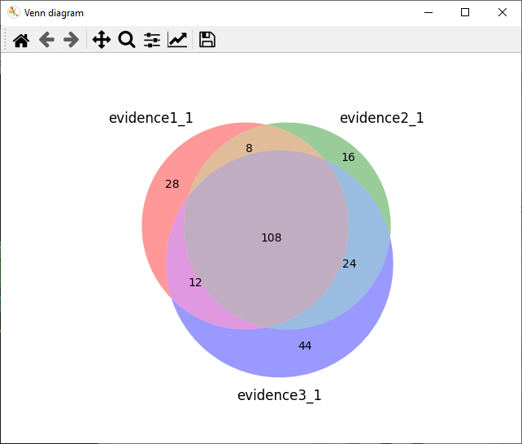
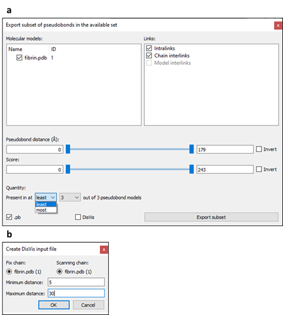

XMAS User
Manual
Scheltema Lab, 29 June 2022
r.a.scheltema@uu.nl
https://github.com/ScheltemaLab
Contents
1. About this manual 4
2.
Dictionary. 4
3.
Abbreviations. 5
4.
Introduction to XL-MS. 6
5.
Setting up. 6
5.1.
Installing ChimeraX. 7
5.2.
Installing XMAS. 7
5.2.1.
Installing from ChimeraX Toolshed. 7
5.2.2.
Installing from source code. 7
5.3.
Opening the main window.. 7
5.3.1.
Opening using the GUI 7
5.3.2.
Opening using the command line. 7
5.4.
Positioning the main window.. 7
6.
Managing models. 9
6.1.
The XMAS model panels. 9
6.2.
Opening and closing models. 9
6.3.
Selecting crosslink models. 9
7.
Managing evidence files. 9
8.
Mapping crosslinks. 10
8.1.
Creating crosslink models. 10
8.2.
Interpreting the mapping log. 11
8.3.
Interpreting the PB file. 11
8.4.
Interpreting the mapping information file. 11
8.4.1.
Reference to peptide pair. 11
8.4.2.
�Pseudobond� 12
8.4.3.
�Overlap category� 12
8.4.4.
�Distance (A)� 12
9.
Analyzing crosslinks. 14
9.1.
Plotting overlap. 14
9.2.
Plotting distances. 14
9.3.
Finding shortest PBs. 14
9.3.1.
Rationale. 14
9.3.2.
Procedure. 14
9.4.
Customizing names. 14
9.5.
Updating distances. 14
10.
Exporting crosslinks. 15
10.1.
Specifying subset. 16
10.1.1.
Molecular models. 16
10.1.2.
Crosslink type. 16
10.1.3.
Distance. 16
10.1.4.
Confidence score. 16
10.1.5.
Quantity. 16
10.2.
Specifying file format. 17
10.2.1.
PB file. 17
10.2.2.
DisVis restraints file. 17
11.
Visualizing crosslinks. 18
11.1.
Value-based coloring. 18
11.1.1.
Gradient coloring. 18
11.1.2.
Cut-off coloring. 18
11.2.
Customized styling. 18
11.3.
Saving visualization settings. 18
11.4.
Examples. 18
12.
Integrative modeling. 20
12.1.
Creating DisVis input. 20
12.2.
Analyzing DisVis output. 20
12.2.1
Selecting an output folder. 20
12.2.2.
Reading and opening relevant content. 20
12.2.3.
Interactive visualization of restraint parameters. 21
12.2.4.
Z-score based restraints selection. 21
12.3.
Creating HADDOCK input. 21
12.3.1.
Interface residue numbers. 21
12.3.2.
Restraints file. 21
12.3.3.
PDB files. 23
13.
Recurring principles. 23
13.1.
Available set. 23
13.2.
Cut-off slider. 23
13.3.
DisVis run. 23
14.
References. 23
This manual explains how to use XL Mapping and AnalySis (XMAS), a tool
for downstream analysis and visualization of crosslinking mass spectrometry
(XL-MS) data. XMAS is a bundle for the molecular visualization software UCSF ChimeraX
(hereafter called ChimeraX)1. The information about ChimeraX that is
required to understand this manual is provided. For further information about
ChimeraX, please visit the ChimeraX web page.
Example files that are used in this manual can be downloaded here, and can be found in the XMAS source code.
-
Accessible interaction space (DisVis) � area representing the collection of the centers-of-mass of all
scanning chain positions for a given number of consistent restrains.
-
Atom name � name used in ChimeraX to refer to a type of
atom.
-
Atom specifier string � set of characters used to refer to an atom
in a ChimeraX session. Atom specifier strings are formatted as follows: #w/x:y@z,
where w represents the model ID, x represents the chain ID, y
represents the residue number, and z represents the atom name.
-
Available set (pseudobonds) � regarding XMAS�s Analyze, Export, and Visualize windows, the available set refers to the
pseudobonds that were selected at the moment that the button to open the window
was clicked.
-
Chemical linker � in crosslinking mass spectrometry, a
chemical linker is a compound that harbors the potential to covalently bind to two
protein residues, thereby linking these residues to each other.
-
Confidence score � numerical value reflecting the likelihood
that an identified crosslink is a true positive. In the evidence files, the
confidence scores for XlinkX, Xi, pLink, and mzIdentML can be found under the �Max.
XlinkX Score� column, �Score� column, �Score� column, and �xi:score� tag,
respectively.
-
Consistent restraint (DisVis) � a
crosslink with a distance that is consistent with the distance restraint.
-
Crosslink � two peptides, covalently linked by a chemical
linker.
-
Crosslink models � graphical models representing a collection
of crosslinks.
-
Distance (crosslink/pseudobond) � the length of the crosslink or pseudobond.
-
Distance restraint � known distance or range of distances between
two atoms.
-
DisVis � webserver for analyzing the information
content of distance restraints between two molecular models.
-
Evidence file � file containing identified crosslinks. From
this file, XMAS uses the peptide amino acid sequences, positions of the
crosslinked residues, and confidence scores.
-
Fixed chain
(DisVis) � term assigned to one of the two molecular
models in a DisVis run. The other model is called the scanning chain.
-
HADDOCK � webserver for restraint-driven molecular
docking.
-
ID
o
Chain ID � unique alphabetical code that refers to a
chain in a ChimeraX model.
o
Model ID � unique numeric code that refers to a
ChimeraX model open in the session.
-
Interlink � crosslink connecting residues belonging to
different proteins.
-
Interlink (XMAS)
o
Chain interlink � PB connecting atoms that belong to different
chains of the same ChimeraX model.
o
Model interlink � PB connecting atoms that belong to different
ChimeraX models.
-
Intralink � crosslink connecting residues belonging to
the same protein.
-
Intralink (XMAS) � PB connecting two atoms in the same ChimeraX
chain.
-
Linked model � model that contains one or more crosslinked
residues; each crosslink model has one or more linked models.
-
Mapping � aligning the peptide amino acid sequences
from peptide pairs in evidence files to the amino acid sequences of molecular
models, and thereby determining possible positions of crosslinks.
-
Mapping information file � tab-delimited file (extension �.tsv�) generated
for each evidence file that was mapped with XMAS, containing mapping results
for each peptide pair.
-
Molecular models
� graphical models representing molecules.
-
Overlap associated � when the alignments of both peptides of a
peptide pair on a molecular model do not overlap, but combinations of
overlapping alignments have been found for the peptide pair.
-
Overlapping (non-self) � when the sequence alignments of both
peptides of a peptide pair on a molecular model overlap in such a way that the crosslinked
residues of the peptides are different, as opposed to identical (as in the
overlapping (self) category).
-
Overlapping (self) � when the sequence alignments of both
peptides of a peptide pair on a molecular model overlap in such a way that the
crosslinked residues of the peptides are identical, as opposed to different (as
in the overlapping (non-self) category).
-
Peptide pair � the two peptides in a crosslink.
-
pLink � search engine to identify crosslinks from
experimental crosslinking mass spectrometry data.
-
Proteome Discoverer � search engine to identify crosslinks from
experimental crosslinking mass spectrometry data.
-
Pseudobond � graphical component in ChimeraX, visualizing
the shortest possible trajectory between two specific atoms as a line (often
dashed).
-
Pseudobond file � ChimeraX readable file (extension �.pb�) to save pseudobonds and
reopen them as a pseudobonds model in a ChimeraX session.
-
Pseudobond specifier string � the atom specifier strings of the two atoms that
are connected by a pseudobond, separated by a space.
-
Residue number � the index of a residue in the amino acid
sequence of a ChimeraX chain.
-
Restraints file (DisVis) � file
(extension �.txt�) containing the PBs and the distance restraints applicable to
them that can be used as input in a DisVis run.
-
Restraints file (HADDOCK) � file (extension �.tbl�) containing the PBs
and the distance restraints applicable to them that can be used as input in a HADDOCK
run.
-
Scanning chain
(DisVis) � term assigned
to one of the two molecular models in a DisVis run. The other model is called
the fixed chain.
-
Selflink � theoretical situation in which a chemical
linker attaches to the same residue twice.
-
Xi � search engine to identify crosslinks from
experimental crosslinking mass spectrometry data.
-
XlinkX � node that can be incorporated into Proteome
Discoverer, to identify crosslinks from experimental crosslinking mass
spectrometry data.
-
Z-score
(DisVis) � score reflecting the likelihood that a
restraint is a false-positive.
-
� � �ngstr�m
-
PB � pseudobond
-
PD � Proteome Discoverer
-
PDB � Protein Data Bank
-
XL-MS � crosslinking mass spectrometry
-
XMAS � XL-MS Mapping and AnalySis
4. Introduction
to XL-MS
In XL-MS, protein residues are covalently linked, or �crosslinked�
together by adding chemical linkers (Figure 1). Since
chemical linkers with known lengths are used, this provides distance restraints
between the crosslinked residues, yielding structural information. To obtain
the distance restraints, the crosslinked proteins are digested, yielding short
fragments called peptides. Since the covalent chemical linkage remains intact
during the digestion, part of the peptides are crosslinked to other peptides2,3. A chemical linker connecting two peptides is
called a crosslink, and the connected peptides are called a peptide pair2. After the digestion, samples are measured using mass spectrometry.
Subsequently, the resulting spectra are analyzed with a search engine to identify
the crosslinks. For each of the peptides in a peptide pair, the amino acid sequence,
and the crosslinked residue (i.e., the residue that the chemical linker is
attached to) are determined. Thereby, the location of each crosslinked residue in
its protein is found. Crosslinks within a protein, called intralinks, provide
information on tertiary structure, whereas crosslinks between proteins, called
interlinks, provide information on the quaternary structure of protein
complexes2,3. The search engine additionally calculates a
confidence score for each crosslink2-4.

Figure 1. Basic
XL-MS workflow.
Adapted from Klykov et al.2.
To use XMAS, users must install ChimeraX
and XMAS, and the XMAS main window must be opened. Changing the main window�s position is
optional.
5.1. Installing ChimeraX
Before XMAS can be installed, ChimeraX version 1.3 should be installed
on the machine used. Instructions for installation of ChimeraX can be found here.
5.2. Installing XMAS
XMAS can be installed from the ChimeraX
Toolshed or manually
from its source code.
5.2.1. Installing from ChimeraX Toolshed
XMAS can be installed from the ChimeraX Toolshed in three ways:
-
By
navigating to the Toolshed within ChimeraX, via �Tools� � �More Tools��, searching for XMAS, and
clicking the �Install� button
-
By executing
the command �toolshed install XMAS� in ChimeraX (commands are executed by
typing them in the ChimeraX command line interface and pressing �Enter�)
-
By
downloading the Python wheel file from the Toolshed in a web browser and
executing the command �toolshed install path_to_downloaded_file.whl�, replacing
path_to_downloaded_file.whl with the actual path to the downloaded
Python wheel file.
5.2.2. Installing from source code
XMAS can also be manually installed by downloading the source code from GitHub and following the instructions in INSTALL.txt.
5.3. Opening the main window
The XMAS main window can be opened in any ChimeraX session, using the
ChimeraX Graphical User Interface (GUI) or command
line. The general
layout of the main window is shown in Figure 2.
5.3.1. Opening using the GUI
In the menu bar, navigate to �Tools� � �Structure Analysis� � �XMAS�.
5.3.2. Opening using the command line
Command line: execute the command �ui tool show XMAS�.
5.4. Positioning the main window
The XMAS main window can be positioned anywhere on screen using dragging
and dropping. It can also be docked on all sides of the ChimeraX main window
and on other tool windows.

Figure 2. Layout
of the XMAS main window in a ChimeraX session.
The ChimeraX Toolbar and
Command Line Interface, tools that are shown by default, are hidden for
clarity. XMAS is docked on the ChimeraX Log. Six models are open in the session:
fibrin.pdb, demo_1.pb, demo_1_shortest.pb, evidence1_1.pb, evidence2_1.pb, and evidence3_1.pb. The first, fibrin.pdb, is a dimeric model of the protein
fibrin. Since a fibrin monomer consists of three chains, the model consists of
six chains, each colored distinctly. The remaining models are pseudobond models
linked to fibrin.pdb. Only
fibrin.pdb, demo_1.pb, and demo_1_shortest.pb are displayed; the
other models are hidden. The selected model is demo_1_shortest.pb. Four files have
been imported in XMAS: demo.tsv,
evidence1.tsv, evidence2.tsv, and evidence3.tsv.
XMAS interacts with ChimeraX to enable managing molecular and crosslink
models in the XMAS model panels. This interaction involves opening and closing both models types, and selection of
crosslink models.
6.1. The XMAS model panels
The XMAS main window contains two model panels: the �Molecular models�
panel on the top left and the �Crosslink models� panel below (Figure 2). These panels contain information on models
relevant for XMAS; the �Molecular models� panel contains the names and IDs of
molecular models open in the ChimeraX session, and the �Crosslink models� panel
contains the names and �Linked models IDs� of the crosslink models open in the
session.
6.2. Opening and closing models
When opening a molecular or crosslink model in the ChimeraX session, the
model information automatically appears in the correct XMAS model panel. NB for
a model to appear in �Crosslink models�, its name needs to end with �.pb�. Closing
a model in the ChimeraX session removes it from its XMAS model panel.
6.3. Selecting crosslink models
When the checkbox of a model in �Crosslink models� is checked or
unchecked, it is automatically selected in the ChimeraX session, and vice versa.
The advantage of selecting in �Crosslink models�, as opposed to the ChimeraX
�Models� window, is the possibility to select multiple models simultaneously.
7. Managing evidence files
Clicking �Import files� underneath the �Evidence files� panel opens a
dialog where one or more evidence files can be selected, which then appear in the
panel. Files are removed from the panel by selecting their name (not the
checkbox) and, subsequently, clicking �Remove selected files�.
XMAS currently supports evidence files generated with the search engines
XlinkX for Proteome Discoverer (PD), Xi, and pLink, in csv, tsv, txt, and xlsx format.
Additionally, mzIdentML files (mzid format) are supported. See Table 1 for instructions on how to obtain the
proper evidence file and the minimum requirements for the file to be used by
XMAS.
|
File type
|
Procedure to obtain evidence file
|
Minimum requirements
|
|
XlinkX
|
In PD, open a pdResult file. Navigate to �File� � �Export� and click �To
Microsoft Excel�� or �To Text (tab delimited)��. Then, select �Crosslinks�
for Level 1 and click �Export�.
|
Peptide sequences are read from columns �Sequence A�
and �Sequence B�. Crosslink positions are specified as the position of the
opening bracket (�[�) in the peptide sequence. For example: for peptide QCS[K]EDGGGWWYNR,
the peptide sequence is QCSKEDGGGWWYNR, and the crosslink position is the
fourth residue (K). If the sequence contains no brackets, the crosslink
position is set to the first residue of the sequence.
|
|
Xi
|
In Xi, navigate to the
�Results� � CSV/TSV� tab. The peptide pair (file name containing �PeptidePair�)
and PSM (file name containing �PSM�) files can both be used.
|
Peptide sequences are read from
columns �Peptide1� and �Peptide2� (peptide pair file), or �PepSeq1� and
�PepSeq2� (PSM file). Any residue modifications, which are denoted in
lowercase, are disregarded from the sequence by XMAS. Crosslink positions are
read from columns �FromSite� and �ToSite� (peptide pair file), or �PepPos1�
and �PepPos2� (PSM file).
|
|
pLink
|
From the pLink output folder, open the �reports�
folder. Here, the evidence file name contains �cross-linked_peptides�.
|
Both peptide sequences and corresponding crosslink
positions of a peptide pair are read from the column �Peptide�. The two
peptide sequences are separated by a dash (�-�), and the crosslink positions
are written between parentheses (�()�). For example: for peptide pair AAEFQGEKEAVR(8)-VVKRTMTK(3),
the peptide sequences are AAEFQGEKEAVR and VVKRTMTK, and the crosslink
positions are 8 and 3, respectively.
|
|
mzIdentML
|
Depends on search engine used
|
Peptide sequences are read from
tag �PeptideSequence� and crosslink positions from tag �location�. All crosslinked
peptide sequences should contain �XL_� and either �_DON� or �_RCV�. For
example, XL_-485_245_DON and XL_-485_245_RCV form one crosslinked peptide
pair.
|
Table 1. Instructions
on how to obtain the proper evidence file with crosslink information from
different search engines (XlinkX, Xi, or pLink) or an mzIdentML file.
8. Mapping crosslinks
XMAS enables mapping the crosslinks in any number of evidence files on
any number of molecular models. For each evidence file, a mapping
log and mapping information file are created. Moreover, if crosslinks could be mapped onto the
structure(s), a crosslink model and PB
file are generated.
8.1. Creating crosslink models
To select the molecular models and evidence files to use for mapping, their
checkboxes are checked in the �Molecular models� and Evidence files� panel,
respectively. Clicking �Map crosslinks� then initiates sequence alignment of
all peptide pairs in all checked evidence files to all checked molecular
models. If at least one perfect alignment has been found for each peptide in a
peptide pair, pseudobonds (PBs) are generated; one PB for each combination of
these perfect alignments. For more information, see 8.4.
Interpreting the mapping information file. All PBs are grouped in PB models; one model
for each mapped evidence file. The name of a PB model is equal to name_IDs.pb,
where name represents the name of the evidence file, and IDs represent
the ID or IDs of the model or models to which it was mapped. Consequently, the PB
model created by mapping demo.tsv on fibrin.pdb
is called demo_1.pb, because the ID of fibrin.pdb
is 1 (Figure 2). Created files (PB files and mapping information files) are stored in the same location as the evidence file. The file names
are identical to the names of the corresponding PB model, where the �.pb�
extension is replaced with �.tsv� for the mapping information file.
8.2. Interpreting the mapping log
For each mapping run, a log is displayed in the ChimeraX �Log� window (Figure 3a).
The mapping log contains the following pieces of information (items marked with
an asterisk (*) are only included when applicable):
-
Evidence
file � �Peptide pair mapping
of engine evidence file: file�, where engine represents
the search engine used to generate the evidence file mapped in the current
mapping run, and file represents the path to that evidence file.
-
*Lacking/decoy
sequence � �x Peptide pairs are disregarded due to lacking/decoy
sequence�, where x represents the number of peptide pairs with a lacking
or decoy peptide sequence. These peptide pairs are ignored in the mapping
procedure. This remark is excluded if all peptides contained sequence
information.
-
Unique
peptide pairs � �Unique
peptide pairs: x out of y�, where x represents the number
of unique peptide pairs, and y represents the total number of peptide
pairs in the evidence file. The difference between both numbers equals the
number of duplicate peptide pairs. No PBs are formed for these peptide pairs.
-
Peptide
pairs with PBs � ��Unique peptide pairs with pseudobonds: x�,
where x represents the number of peptide pairs for which PBs have been
found.
-
*PB file � �Pseudobonds
are stored in file�, where file represents the path to the PB
file generated for the current mapping run. This remark is only included if PBs
were created in this mapping run.
-
*Mapping information file � �Mapping
information is stored in file�, where file represent the path to
the mapping information file generated for the current mapping run. This remark
is only included if PBs were created in this mapping run.
8.3. Interpreting the PB file
The PB file is especially useful to open PBs in another session than the
session in which they were created. Each line in the file is a PB specifier
string, representing one PB (Figure 3b-d). XMAS connects
the α carbon
atoms of the crosslinked residues. Therefore, the atom names for the two atoms
in the string is �CA�; the ChimeraX code for α carbon. NB besides PB specifier strings, PB
files might contain additional information. Firstly, comment lines starting with
a semicolon might be present. Secondly, additional information can be included
after the PB specifier. This additional information is explained in the ChimeraX User Guide.
8.4. Interpreting the mapping information file
The mapping information file enables tracing back the mapping results to
the peptide pairs in the evidence file. Each peptide pair in the evidence file
gets one or more rows in the information file (Figure 3e).
Each row has four columns: Reference to peptide pair, 'Pseudobond', 'Overlap category',
and 'Distance (A)'.
8.4.1. Reference to
peptide pair
Column that refers to the peptide pair in the evidence file. The type of
reference depends on the evidence file format and can be inferred from the
column header. In XlinkX evidence files, the value in the reference column is
equal to the row number in the evidence file. For Xi, pLink, and mzIdentML evidence
files, the value refers to the �PeptidePairID� or �PSMID� column (depending on
which one is present in the evidence file), the �Peptide_Order� column, and the
�Peptide id� tag, respectively.
8.4.2. �Pseudobond�
Can contain four types of data:
-
�Sequence
lacking�, if peptide sequence
information was lacking for this peptide pair in the evidence file.
-
�No
pseudobonds�, if no PBs were
found for this peptide pair, even though peptide sequence information was
available.
-
�Duplicate
of x�, where x
represents the identical peptide pair.
-
A PB
specifier string, specifying a PB that belongs to this peptide pair. All PBs
belonging to one peptide pair get one row, meaning that peptide pairs with
multiple PBs will get multiple rows. For example, peptide pair 7 in Figure 3e has four PBs, since there is one PB for each of
the four combinations of chains: B to C, B to F, C to E, and E to F.
8.4.3.
�Overlap category�
Can contain four types of data:
-
No data, when no PBs were found for a peptide pair.
-
�Overlapping
(non-self)�, for PBs between
two residues that result from overlapping alignments (Figure
3f). In reality, residues cannot be shared between the two peptides of a
pair. Hence PBs in this category are excluded from the PB model. However,
unlike PBs of the �overlapping (self)� category, �Overlapping (non-self)� PBs can
be opened in a ChimeraX session by storing their specifier strings in a PB file
and opening this file in ChimeraX.
-
�Overlapping
(self)�, for PBs that result
from overlapping alignments and that attach to the same residue twice, i.e.,
selflinks (Figure 3f). Like PBs of the �overlapping
(non-self) category, these PBs are excluded from the PB model, because selflinks
do not occur in reality. Since ChimeraX does not support formation of a PB that
links an atom to itself, it is impossible to open PBs of the �overlapping
(self)� category in ChimeraX.
-
�Overlap
associated�, when the PB
belongs to a peptide pair for which overlapping alignments were found, but the PB
itself does not result from overlapping alignments (Figure
3f). For example, peptide pair 5 in Figure 3e
has two PBs from overlapping alignments, where both peptides are aligned on
chain B, or both on chain E. However, this peptide pair also has two PBs from
non-overlapping alignments, where one peptide is aligned on chain B, and the
other on chain E, and vice versa. Given that peptide pair 5 has both
overlapping and non-overlapping alignments, the PBs from non-overlapping
alignments are categorized as �Overlap associated�.
-
�Not
overlap associated�, when the PB
belongs to a peptide pair for which no overlapping alignments were found (Figure 3f).
8.4.4. �Distance (A)�
The distance between the atoms linked by a PB at the moment that �Map
crosslinks� was clicked, in �ngstr�m (�). Distances are only shown for non-overlapping
PBs, since only these are included in the PB model. The distance column can be updated.

Figure 3.
Mapping run of an XlinkX evidence file on a molecular model.
a. The
mapping log. b. Lines in the generated PB file. Note that the line
numbers are not present in actual PB files. c. The molecular
model with the generated PB model in ChimeraX. d. Schematic
representation of b and c. The six chains from the molecular
model in c are depicted as continues lines with corresponding colors.
Chains A-C are shown in a left-to-right orientation, and chains D-F in a
right-to-left orientation. Chain IDs and the first residue numbers are depicted
at the start of each chain. PBs are displayed as yellow dashed lines between
chain residues, of which the residue numbers are visualized. The numerical
labels on the PBs correspond to the line numbers in b. e.
The mapping information file. f. Schematic examples of the three overlap
categories in e.
9. Analyzing
crosslinks
To analyze a set of PBs (the available
set), these PBs are selected
and the �Analyze� button in the XMAS main window is clicked, which opens the
Analyze window (Figure 4a). This window provides four
functions: plotting overlap between multiple PB models, plotting distances,
finding the shortest PBs per peptide pair, and updating distances
in the mapping information file. Moreover, the Analyze window enables customizing the
names used for plot labels and generated models. Created plots can be saved by
clicking the save icon �in the plot window.
9.1. Plotting
overlap
Clicking �Plot overlap� visualizes the overlap between PB models in a
Venn diagram. A circle is drawn for each of the models. The overlap between the
circles represents overlap between the models. The numbers represent the number
of unique PBs in a subset. For example, in Figure 4b,
28 PBs are only present in Replicate 1, whereas 8 PBs are shared between Replicate
2 and Replicate 3, and 108 PBs are present in all three replicates.
9.2.
Plotting distances
Clicking �Plot distances� plots the distances of the PBs in the available
set in a box plot combined with a strip plot (Figure 4c).
Data are grouped per PB model. The plot can be saved by clicking the save icon �in the plot window.
9.3. Finding
shortest PBs
When one peptide pair yields multiple PBs, in the case of homomultimeric
complexes like fibrin.pdb in Figure
3, for instance, it can be useful to take only the shortest PBs per
peptide pair into account, since these are often more likely to be correct.
However, it is important to realize that this procedure introduces bias.
Upon clicking �Find shortest�, the distance by which the PBs are allowed
to differ can be specified (Figure 4d). For
instance, when the specified distance is 1 �, and the shortest PB of a peptide
pair is 5 �, PBs with a distance of at most (5 + 1 =) 6 � are also included in
the shortest PBs for that peptide pair. After clicking �OK�, a new PB model is
generated, called chosen_name_shortest.pb,
where chosen_name represents the name under �Chosen name�. For instance,
the PB model demo_1_shortest.pb in Figure 2 resulted from applying the �Find shortest�
function to demo_1.pb.
9.4. Customizing names
By default, the labels in plots, as well as the names of models generated
via the Analyze window are equal to the name(s) of the model(s) in the
available set. However, the name(s) to be used can be changed in the �Customize
name� panel; names under �Chosen name� can be edited after double clicking them
(Figure 4a).
Clicking �Update distances� updates the distances in the mapping
information file. This is useful when PBs connecting two models are present,
and the model�s positions have been moved with respect to one another, thus changing
the distances of inter-model PBs. If none of the selected PBs are represented
in a mapping information file, as is the case when a PB�s model was not created
with XMAS, this button is disabled.

Figure 4. Functionalities
of the Analyze window.
a. Analyze
window opened when PB models evidence1_1.pb,
evidence1_1.pb, and
evidence1_1.pb were
selected. b.
Venn diagram created by clicking �Plot overlap� in the Analyze window. c.
Distance plot created by clicking �Plot distances� in the Analyze window. d.
Additional content appearing in the Analyze window upon clicking �Find
shortest�, which enables specifying the allowed difference in distance between
the shortest PB from a peptide pair and other PBs from that same peptide pair.
PBs within the maximum allowed distance are included in the generated PB model.
10. Exporting
crosslinks
The �Export� button opens the Export window, which contains components
that enable specifying a subset to
export, and the file format(s) of the thereby generated files (Figure 5a). The subset is specified by excluding specific PBs
from the available set. Clicking �Export subset� initializes the
export.
10.1. Specifying subset
Criteria that can be used to in- or exclude PBs from the exported subset
are the molecular model(s) that they belong to, their crosslink type, distance, confidence score, and quantity.
10.1.1. Molecular models
The �Molecular models� panel contains all molecular models that the PBs
in the available set belong to. For example, the PBs in the available set from Figure 5a are all between atoms from fibrin.pdb,
so fibrin.pdb
is the only model present in the panel. PBs that
(partially) belong to a model that is unchecked in this panel are excluded from
the exported subset.
10.1.2.
Crosslink type
In the �Links� panel, three types of links are specified. A PB always
belongs to one of these link types, depending on the atoms that it connects:
-
In intralinks,
connected atoms belonging to the same chain.
-
In chain
interlinks, connected atoms belonging to different chains in the same
model.
-
In model
interlinks, connected atoms belonging to different models.
PBs of a link type with an unchecked checkbox are excluded from the
exported subset.
A link type is disabled in the �Links� panel when it conflicts with the
models in the �Molecular models� panel. For example, �Model interlinks� is
disabled in Figure 5a, because only one model is
present in �Molecular models�, which means that there will be no PBs that
connect atoms between different models. Likewise, if none of the molecular
models contain multiple chains, �Chain intralinks� will be disabled.
10.1.3.
Distance
PBs can be excluded from the exported subset
based on their distance in �, using a cut-off slider for
distance. When a PB length violates the distance slider�s allowed range, it is
not displayed, allowing interactive visualization upon manipulation of the
slider.
10.1.4.
Confidence score
To exclude PBs from the exported subset based
on their peptide pair�s confidence score in the evidence file, a cut-off slider for this
score is used. If one or multiple PBs in the available set are not linked to a
score, the score slider is disabled. A PB is only linked to a score if it was
created by mapping an evidence file with XMAS. Consequently, opening a new PB
file with ChimeraX itself results in PBs without scores and a disabled score slider.
10.1.5. Quantity
Two dropdown menus below �Quantity� enable defining how many times a PB
needs to be present in the available set in order to be included in the
exported subset. A choice is made between �least� and �most� in the left
dropdown menu, and the number of PB models is chosen in the right dropdown
menu. For example, if only the PBs that are present in three out of three PB
models ought to be included, �least� should be selected in the left dropdown
menu, and �3� in the right (Figure 5a). In this
manner, only the PBs that are present in at �least 3 out of 3 PB models� are
included. Conversely, selecting �most� and �1� results in including only PBs
that are present at �most 1 out of 3 PB models�, i.e., the PBs that are
uniquely present.
10.2. Specifying file format
The subset can be saved as a PB file (�.pb� checked), a DisVis restraints file (�DisVis� checked), or both. Upon clicking �Export
subsets�, a window will appear that enables choosing the storage location(s)
and name(s) of the created file(s).
When �.pb� is checked, a new PB file will be created, containing the
chosen subset of PBs. These PBs will also be opened as a new PB model in the
ChimeraX session.
10.2.2.
DisVis restraints file
When �DisVis� is checked, a new restraints file will be created,
containing the chosen subset of PBs. This file can be used as restraints file
in a DisVis run. Restraints files differ from PB files, because the atom specifiers
required for DisVis are different than those required for ChimeraX. Moreover,
whereas the order of the atom specifiers is irrelevant in a PB file, DisVis
requires all first atoms to be from one model (called �fixed chain� in DisVis),
and all second atoms from another model (called �scanning chain�). Lastly, a
minimum and maximum distance must be specified for the DisVis restraints file.
Before the file can be saved, a DisVis window appears (Figure
5b) in which the fixed and scanning chains should be specified, and the
minimum and maximum distances can be assigned. See 12. Integrative modeling for more information on integrating XMAS and DisVis.

Figure 5. Functionalities
of the Export window.
a. Example of an Export window. b.
Example of a DisVis window.
11. Visualizing
crosslinks
The �Visualize� button opens a window with several options to change the
appearance of the available set of PBs. The functions of the Visualize window
can be subdivided in two categories: value-based coloring and customized styling (Figure 6a). The
changes made can be discarded by clicking �Cancel� or accepted by clicking
�Apply�. Checking �Save pb file� allows saving visualization settings in a new PB file.
11.1. Value-based coloring
This functionality entails coloring PBs according
to their distances and confidence scores. For both types of values, PBs can be colored according to a gradient and a cut-off range. Color
gradients are mutually exclusive, so when a gradient checkbox is checked, the
other gradient checkbox is automatically unchecked. However, one color gradient
can be used simultaneously with both cut-off options.
11.1.1. Gradient coloring
Upon checking a gradient checkbox, the PBs are colored according to a
color gradient that corresponds to the range of values. The colors and their
corresponding values are displayed in a Color Key model at the bottom right corner of the
ChimeraX model display area. The lowest value is set to 0 for the distance and confidence
score gradient. The maximum distance gradient value is set to the maximum value
found in the available set. For the confidence score, on the other hand, the maximum
gradient value is set to 200, so that all PBs with a score of 200 or higher get
the same color.
11.1.2. Cut-off coloring
Upon checking a cut-off checkbox, a range can
be specified using cut-off sliders for distance and confidence score. PBs with a
distance or score that violates the range specified with the slider are colored
differently than the other PBs. The colors used are described in 11.2. Customized styling.
11.2. Customized styling
This functionality entails customizing color, radius, and number of
dashes of the PBs. Colors and radii for PBs that are within the cut-off ranges
of 11.1.2. Cut-off coloring (referred to as �Main�) can be set differently
than those outside of these ranges (referred to as �Cut-off�). The number of
dashes can only be applied to complete PB models. Consequently, the number of
dashes change for all models that have at least one PB in the available set. By
default, radii are 0.5 and the number of dashes is 8.
11.3. Saving visualization settings
When the �Save pb file� checkbox is checked and �Apply� is clicked, the PBs
in the available set, including their colors and radii, are saved in a new PB
file. For all PB models that contain PBs from the available set, one file is
generated. NB each file will contain all PBs from its PB model, instead of only
the PBs from the available set. The number of dashes is not saved.
Examples of images that can easily be rendered using the Visualize window
are shown in Figure 6b.

Figure 6. Functionalities
of the Visualize window.
a. Example
of a Visualize window. b. Examples of images created with the
aid of the Visualize window. Example 1 was created by applying a distance
gradient and a cut-off color (red) for distance and score cut-offs. The color
key model represents the PB distances in � and their corresponding color.
Example 2 was created by applying a score gradient and the same cut-offs as in
Example 1. The cut-off color was changed to blue. Moreover, the radii of �Main�
PBs were decreased, whereas the radii of �Cut-off� PBs were increased. The
number of dashes was set to 1.
12. Integrative
modeling
Crosslinking data can be used as information for modeling protein
complexes. Identified crosslinks then serve as distance restraints that guide
the modeling process. XMAS therefore supports integration with structural
modeling platforms DisVis and HADDOCK. DisVis can be used to analyze protein complex
models in light of the supplied distance restraints and exclude restraints that
are likely to be false-positive. HADDOCK is a molecular docking platform that enables
distance restraint guided docking. Clicking the �Integrate� button in XMAS�s
main window opens a window in which an integrative modeling step can be chosen:
creating DisVis input, analyzing
DisVis output, and creating HADDOCK input (Figure 7a).
12.1. Creating DisVis input
Clicking �Create DisVis input� opens the Export window
with its �DisVis� checkbox checked. Here, the restraints file containing the
crosslinks in the DisVis-required format can be generated.
12.2. Analyzing DisVis output
Clicking �Analyze DisVis output� opens a window with options to process
the output of a DisVis run (Figure 7b). This window
enables DisVis output folder selection, reading
and opening the
relevant contents of this folder in ChimeraX, interactive visualization of restraint distances and z-scores, and z-score based restraints
selection. NB what is
called a model in ChimeraX, is called a chain in DisVis. The term model is
henceforth used in this section.
12.2.1
Selecting an output folder
To select a DisVis output folder, the path to this folder is inserted in
the text box, or �Select folder� is clicked. The output depends on the DisVis
version used to execute the run; the grid or the local version. Regardless of
the DisVis version used, the output folder should always contain:
-
The fixed
and scanning models as Protein Data Bank (PDB) files. In case of the local
version, these files are always called fixed_chain.pdb
and scanning_chain.pdb.
-
The restraints
file that was used as input
Output folders from the grid version should additionally always contain
(Figure 7c):
-
The DisVis
log file; disvis.txt
-
The accessible
interaction space file; accessible_interaction_space.mrc
-
The
z-scores file; z-score.out
Output folders from the local version should additionally always
contain:
-
The results
file; results.html
12.2.2. Reading and opening relevant content
When the DisVis output folder is selected, and �Use folder� is then
clicked, XMAS will open the fixed and scanning models from their PDB files in the
ChimeraX session. Additionally, each restraint in the restraints file is visualized
as a PB. The specified minimum and maximum distances are also read from the
restraints file. Moreover, in case of grid version output, the accessible
interaction space is opened from accessible_interaction_space.mrc.
Next, the z-scores are read from z-scores.out
(grid version) or results.html (local version) and each
z-score is linked to the PB that reflects the corresponding distance restraint.
A cut-off slider for the z-scores appears in the Integrate
window. Unlike other XMAS cut-off sliders, the initial minimum value is equal
to the lowest z-score present, instead of zero.
12.2.3. Interactive visualization of restraint
parameters
After the DisVis output folder has been read, two relevant parameters,
namely distances and z-scores, can be inspected visually.
12.2.3.1. Distances
The PBs from the restraints file are colored either yellow or red,
depending on whether they violate the specified minimum or maximum distance.
Distances of yellow PBs are within the specified range, whereas those of red PBs
are outside the range. The coloring will be adjusted automatically if models
change position with respect to each other.
12.2.3.2. Z-scores
When manipulating the z-score slider, PBs with a z-score outside the chosen
range will be hidden from view.
12.2.4. Z-score based restraints selection
To select the restraints within a chosen z-score range, the z-score
slider is set to this range, and �OK� is clicked. XMAS then writes a PB file containing
only the PBs with an appropriate z-score. The written file is stored in a new
folder, Selected_restraints, which is created inside the
DisVis output folder used. The file is named restraints_selected.pb,
where restraints represents the name of the DisVis restraints file
without its file extension (�.txt�).
12.3. Creating HADDOCK input
Clicking �Create HADDOCK input� opens a window with options to obtain
input for a crosslink-driven, single-body docking procedure, i.e. a two-model
complex, in HADDOCK (Figure 7d)5. In the input, HADDOCK requires the chain ID of one model to be A, and
the chain ID of the other model to be B. Furthermore, HADDOCK requires the
residues of each model to be numbered from 1 onwards. XMAS arranges that both
criteria are being met when creating HADDOCK input.
Firstly, the PB model that contains the crosslinks to be supplied to
HADDOCK is selected. All PB models present in the �Crosslink
models� panel of XMAS�s
main window that connect two molecular models are selectable.
Secondly, the other parameters can be specified: chain A, input type(s),
and restraint distances.
-
Chain A. The two molecular models that
are connected by the selected PB model appear, so that the model to be defined
as chain A can be chosen. The other model will automatically be defined as
chain B.
-
Input type(s). XMAS supports three HADDOCK
input types: interface residue numbers, a restraints file in tbl format, and PDB
files.
-
Restraint distances. In a HADDOCK restraints file, a
median distance and lower and upper bound are specified for all restraints.
12.3.1. Interface residue numbers
In a HADDOCK run, the residues that are expected to be involved in the
interaction interface can be supplied as active or passive residues. The input
format is a list of the residue numbers, which is printed in the ChimeraX log
and can be copy-pasted.
12.3.2. Restraints file
The restraints can be supplied to HADDOCK in a tbl file.

Figure 7. Integrative modeling.
a. Window in
which the integrative modeling step is chosen. b. ChimeraX session in which the XMAS Integrate window (titled �Process
DisVis output�) is used. After selecting the DisVis output folder (C:/disvis_output), �Use folder� was
clicked by the user. This prompted the opening of fixed.pdb, scanning.pdb, and accessible_interaction_space.mrc from
the folder, and the appearance of the ChimeraX �Volume Viewer� window, in which
the user set the level at 14 consistent restraints. XMAS also created the PB
model restraints.pb in
this process. After the user specified a maximum z-score of 0.5 with the
slider, and clicked �OK�, XMAS generated the PB file and model restraints_selected.pb, which contained
only the PBs with a z-score of 0.5 or lower. In the log, the storage location
of the generated PB file is mentioned. NB restraints_selected.pb is hidden from
view in the session, the only visible PB model being restraints.pb. c. Files in the DisVis
output folder used in b. d. Window to create HADDOCK input, in
this case from the PB model restraints.pb. The PBs from this model connect
molecular models fixed.pbd and scanning.pdb. The model
fixed.pdb is
selected to be (re)named chain A in the created input.
HADDOCK requires the PDB files of
both models, chain A and chain B. XMAS enables creating these PDB files from
the molecular models, with the correct chain name and residues renumbered from
1 onwards.
Two principles occurring in multiple components of XMAS are the available set of
PBs, cut-off slider, and DisVis
run.
13.1. Available set
The principle of the available set applies to the Analyze, Export, and Visualize windows. This set comprises the PBs that were
selected at the moment that a window was opened. Operations performed in the
window will exclusively influence the PBs in the available set, unless
otherwise stated. NB changing the selection when an Analyze, Export, or
Visualize window is already open, will not change the available set of PBs. Hence,
a new window needs to be opened to use a different set. Furthermore,
non-selected PBs in a partially selected model are excluded from the available
set.
13.2. Cut-off slider
Cut-off sliders are found in the Export, Visualize, and Integrate
windows. These sliders dictate the range of values that a PB is allowed to
have. The value covered by a slider can be distance, confidence score, or
z-score. The minimum and maximum cut-off values are visible in the text boxes
on the left and right side of the slider, respectively. Initially, the minimum
value is zero, and the maximum value is equal to the highest value found in the
set of PBs, unless otherwise stated. The cut-off values can be adjusted by
typing the required minimum and maximum values in their text boxes. Moreover,
they can be adjusted by moving the left and right slider handles, or the bar
between those, using the cursor. By default, all values in the range between
and including the cut-off values are considered allowed. The �Invert� checkbox
is checked to change the allowed range, to values equal to or lower than the
minimum cut-off value, and equal to or higher than the maximum cut-off value.
When multiple cut-off sliders are present in the same window, the allowed
ranges of all sliders are applied.
13.3. DisVis run
The input for a DisVis run comprises two models and crosslinks between these
models. One model is defined as �fixed chain� and the other as �scanning
chain�. The crosslinks are referred to �restraints� and are loaded into DisVis
in a restraints file, which can be generated with XMAS. A vast number of scanning chain positions (relative to the fixed chain),
in which the two structures can theoretically interact chemically, is sampled. For
each sampled position, it is determined whether a restraint is consistent with
the specified distance.
Runs can be executed on the grid version or the local version of DisVis.
The grid version is always used, unless otherwise specified when running the run.
Since the output differs per version, the DisVis-generated output files that
are relevant for XMAS depend on the version used (see 12.1.
Selecting an output folder).
For further technical details, please read the DisVis manual.
1. Goddard TD, Huang CC, Meng EC, et al. UCSF ChimeraX: Meeting modern
challenges in visualization and analysis. Protein Science.
2018;27(1):14-25.
2. Klykov O, Steigenberger B, Pektaş S, Fasci D, Heck AJR,
Scheltema RA. Efficient and robust proteome-wide approaches for cross-linking
mass spectrometry. Nature Protocols. 2018;13(12):2964-2990.
3. O'Reilly FJ, Rappsilber J. Cross-linking mass spectrometry: Methods
and applications in structural, molecular and systems biology. Nature Structural
& Molecular Biology. 2018;25(11):1000-1008.
4. Liu F, L�ssl P, Scheltema R, Viner R, Heck AJR. Optimized
fragmentation schemes and data analysis strategies for proteome-wide cross-link
identification. Nature Communications. 2017;8(1):15473.
5. Honorato RV, Koukos PI, Jim�nez-Garc�a B, et al. Structural biology
in the clouds: The WeNMR-EOSC ecosystem. Frontiers in Molecular Biosciences.
2021;8:729513.